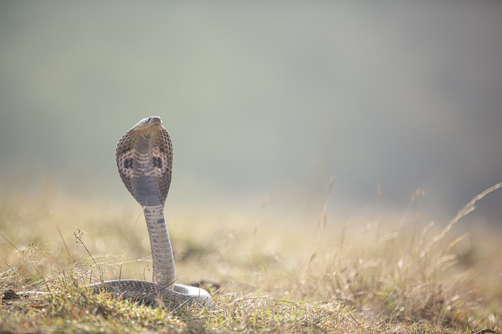

What classifies animals as exotic?
“Exotic” pets include a wide variety of animals: birds, rodents (hamsters, gerbils, guinea pigs, chinchillas, rats, mice), rabbits, ferrets, reptiles (snakes, lizards, turtles, tortoises), amphibians (frogs, toads), sugar gliders (marsupials), hedgehogs, potbellied pigs, and even spiders. The definition of a wild or exotic animal is one that does not belong to one of seven domesticated species: dogs, cats, horses, pigs, cows, sheep or goats.

Do albino Bats exist?
The definition of a wild or exotic animal is one that does not belong to one of seven domesticated species:
dogs, cats, horses, pigs, cows, sheep or goats.
An albino bat would definitately be classified as an exotic animal. If they even exist? What do you think?

King Cobra
It has a maximum length of 18 feet. Additionally, the animal can kill an elephant with with one toxic bite.
Cobras consume birds, lizards, and small mammals. The snake is a favorite meal of the mongoose, a type of mammal, thus they may also end up on the dinner menu. Venomous snakes called King Cobras are found in South and Southeast Asia.
The reptile lives in wetlands and woodlands. It has a maximum length of 18 feet.
Additionally, the animal can kill an elephant with with one toxic bite.
Cobras consume birds, lizards, and small mammals. The snake is a favorite meal of the mongoose, a type of mammal, thus they may also end up on the dinner menu.
Can a human survive a bite from a King Cobra?
The majority of snakebites, including cobra bites, are not fatal. But every snakebite requires emergency medical attention. The most crucial action is to get a hospital as soon as possible.